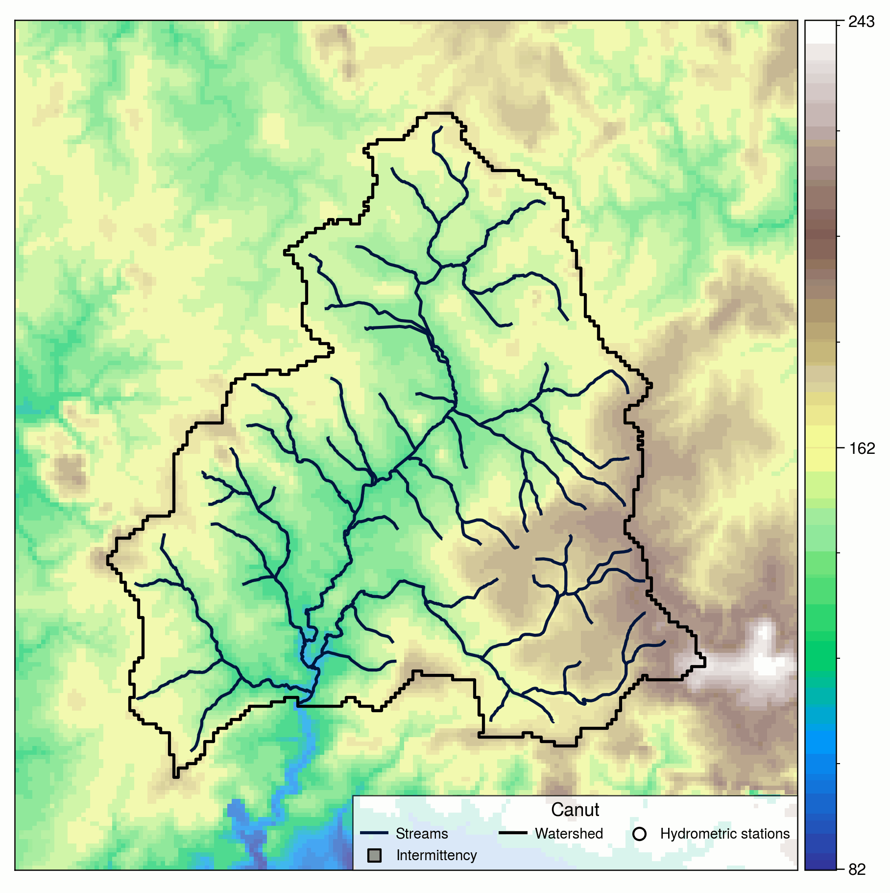
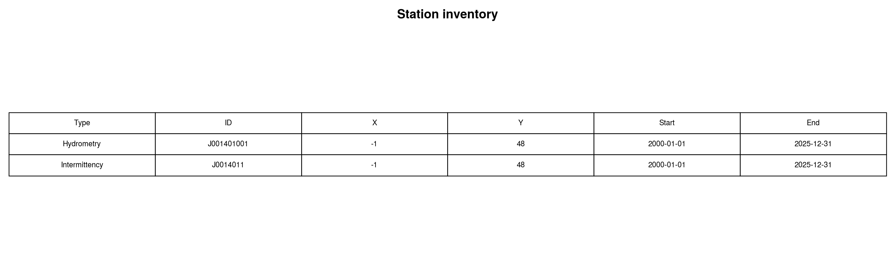
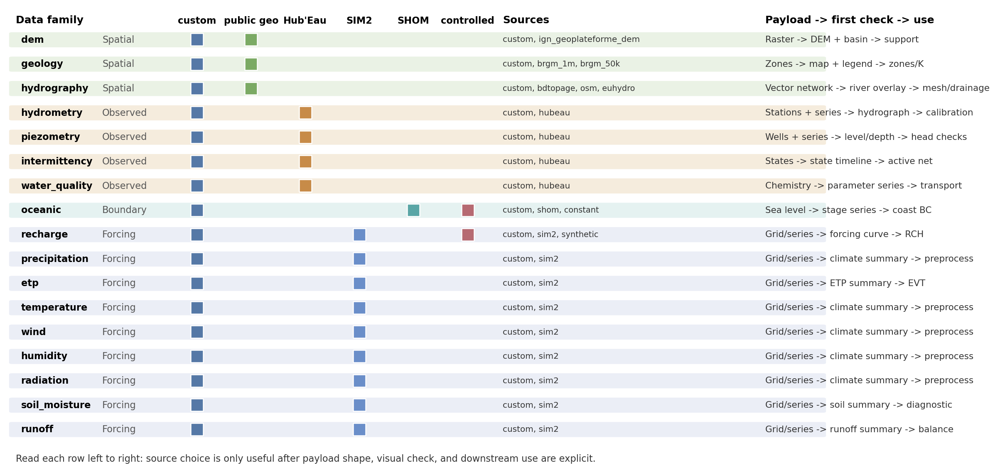
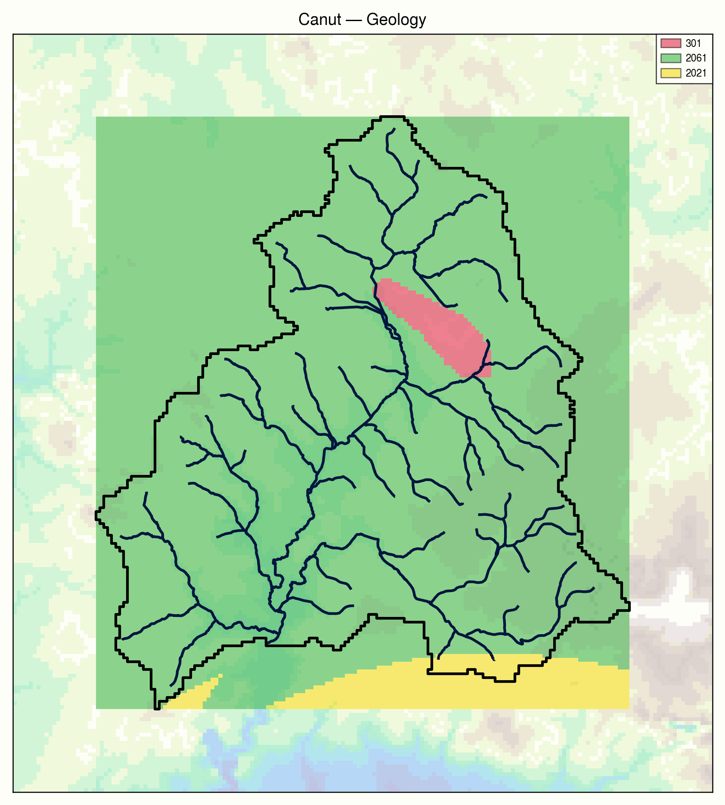
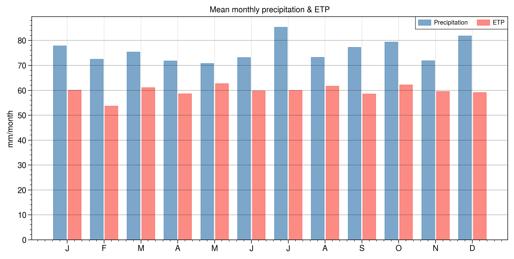
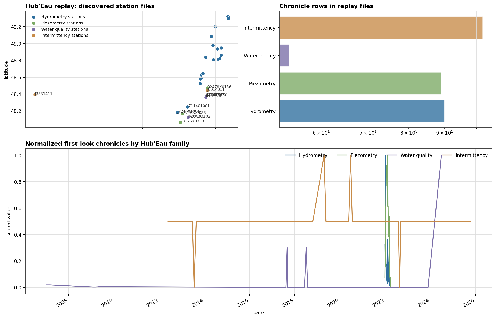
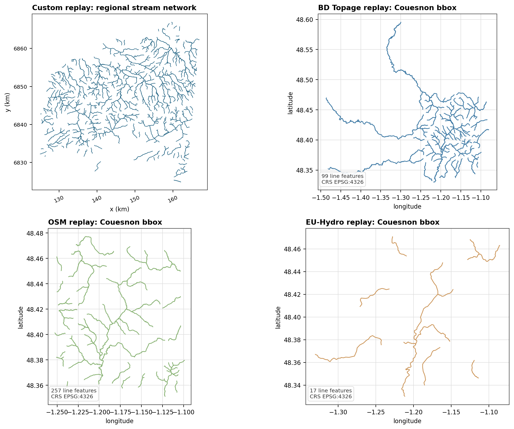
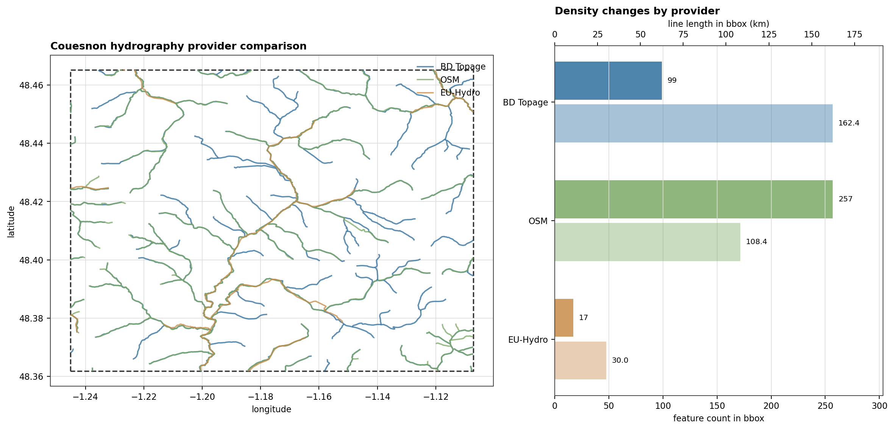

Data Loading And Retrieval#
HydroModPy treats data acquisition as a first-class workflow layer. A project does not only point to files: it can discover public observations, download gridded forcing, ingest local archives, normalize everything into common contracts, cache reusable artifacts, and lock the cache for reproducible runs.
This chapter is the operational entry point for that layer. It sits in the user guide because most choices here are project choices: which families to load, which providers to trust, which time window to use, and how strict the run must be about cached inputs.
Reading map#
Goal |
Read |
Main decision |
|---|---|---|
Retrieve public data for one basin |
Pick |
|
See every supported family and provider |
Provider matrix below |
Decide between public APIs, local files, synthetic forcing, and constants. |
Read one page per data family |
See Data families below |
Inspect the operational contract, examples, checks, and source-specific sections for each data type. |
Connect pages with generated figures |
Use the lightest run that explains the data: local file checks, provider grids, overview maps, or solver response. |
|
Inspect provider-specific replay cases |
Read SHOM, Hub’Eau, SIM2, and hydrography examples from committed provider artifacts before planning live refreshes. |
|
Use institutionally curated local datasets |
Match local rasters, vectors, or station time series to HydroModPy’s custom-source conventions. |
|
Make the same run reproducible later |
Inspect the cache, update the lockfile, verify hashes, and archive data. |
|
Inspect the generated configuration surface |
Read the typed |
Conceptual model#
The data layer has four responsibilities:
Declare the active data families in
[data].types.Resolve each family to one or more
[[data.<family>.sources]]blocks.Normalize loaded records into field, point, or timeseries contracts.
Persist API-backed artifacts in the workspace cache when a workspace exists.
The same records then feed overview figures, geographic preprocessing, mesh and solver setup, calibration objectives, comparison workflows, and reports. That is why data retrieval deserves its own user-facing chapter instead of being hidden in solver examples.
Where this fits#
First-run tutorials use Data Overview Walkthrough to show one complete no-solver data workflow.
This chapter explains how to adapt that workflow to other basins and data policies.
Data Loading Architecture documents the internal planner and runtime handoff for contributors.
Illustrated reference#
The pages in this chapter use the Nancon data-overview case as the practical reference. It is a no-solver workflow: the figures below are data and support diagnostics, not simulation results. For the complete case page, open Nancon Observation Identity Card.


Provider matrix#
This section lists the public and local source values accepted by the data
configuration models. The details are derived from the *SourceConfig
classes under hydromodpy.data.variables. For operational details,
examples, and source-specific checks, use the per-family pages below.
Visual source matrix#
Read the matrix from left to right: source values are useful only after the payload shape, first diagnostic, and downstream use are clear.
{kind=link}

Fig. 105 The colored cells group sources by role: local files, public geographic providers, Hub’Eau observations, SIM2 forcing, SHOM coastal data, and controlled sources such as synthetic or constant values.#
Family inventory#
Family |
Accepted |
Payload shape |
Main selectors |
|---|---|---|---|
|
|
Elevation raster |
|
|
|
Geology zones as vector or raster data |
|
|
|
River-network geometries |
|
|
|
Discharge stations and chronicles |
|
|
|
Groundwater-level wells and chronicles |
|
|
|
ONDE flow-state observations |
|
|
|
River or piezometer chemistry observations |
|
|
|
Sea-level or coastal boundary time series |
|
|
|
Gridded or point recharge forcing |
|
|
|
Gridded or point precipitation forcing |
|
|
|
Potential evapotranspiration forcing |
|
|
|
Air-temperature forcing |
|
|
|
Wind forcing |
|
|
|
Relative-humidity forcing |
|
|
|
Atmospheric and visible radiation |
|
|
|
Soil-moisture fields or time series |
|
|
|
Surface-runoff forcing |
|
Reading the matrix as figures#
The matrix is easier to use if each provider group is tied to one expected visual outcome. On the Nancon reference overview, public geographic layers, Hub’Eau-style observations, and SIM2-style forcing context appear on the same basin report.


Provider replay cases#
The compact matrix tells which providers exist. The replay cases show what their committed artifacts look like and where provider-specific comparisons already exist.
{kind=link}

Fig. 108 Hub’Eau covers several observation families. Treating all of them as one generic time series would hide the station metadata, quality fields, and different semantics.#
{kind=link}

Fig. 109 Hydrography provider examples need source-specific comparisons. The current replay is stable for custom, BD Topage, OSM, and EU-Hydro artifacts.#
{kind=link}

Fig. 110 A source value is a modeling decision, not just a loader switch. On this bbox, the public hydrography providers produce visibly different density and continuity.#
Open Provider Replay Cases for the complete provider replay page.
Provider families#
Provider group |
Source values |
Typical role |
|---|---|---|
Public geographic layers |
|
Build watershed context: DEM, geology, and stream-network support. |
Hub’Eau observations |
|
Discover and download streamflow, piezometry, ONDE intermittency, and water-quality observations. |
SIM2 forcing |
|
Retrieve gridded meteorological and hydrological forcing over a project period and spatial window. |
Coastal boundary data |
|
Retrieve observed sea-level data or declare a controlled fixed sea level. |
Local and controlled data |
|
Use project-owned files or deterministic forcing for reproducible tests and teaching cases. |
Common fields#
Field |
Applies to |
Meaning |
|---|---|---|
|
Every source block |
Selects the provider implementation. |
|
|
Points to a local directory or file. Relative paths are resolved from the TOML file, with workspace data fallbacks for bare filenames. |
|
Most spatial and observation families |
Uses a local mask to clip grids or filter stations. |
|
DEM, geology, Hub’Eau families, SIM2 families, oceanic |
Uses project |
|
Point/time-series families |
Restricts loading to known station identifiers. |
|
Custom grids and point series that expose units |
Overrides or documents the input unit before conversion to HydroModPy’s internal unit. |
|
API-backed and cached sources |
Bypasses compatible cache hits for that source. |
|
Hub’Eau and SHOM-style discovery |
Expands a station search if the initial spatial filter finds no usable observations. |
|
Observation discovery |
Keeps only stations with observations over the requested period when
|
Specialized fields#
geology.code_fieldis required for custom vector geology sources.geology.values_table_pathcan attach tabular property values to geology codes.hydrometry.productis required for Hub’Eau hydrometry sources;QmnJis the usual daily-discharge code.precipitation.componentsacceptsliquid,solid, andtotal.radiation.componentsacceptsatmosphericandvisible.piezometry.productacceptslevelordepth.water_quality.site_typeacceptsriverorpiezometer.water_quality.parametersrestricts downloaded chemistry parameters.oceanic.valueis used bysource = "constant".recharge.values,start_date,freq,periods,amplitude,period_days,offset, andrunoff_ratiobelong to synthetic recharge forcing.
Data families#
Each family page documents a typed data input. It lists accepted source
values, a minimal TOML example, expected loaded shape, and the first
diagnostic figure to inspect. Each family page also bundles the
source-specific sections (custom, public providers, synthetic) that
used to live in dedicated leaf pages.
Group |
Families |
Main role |
|---|---|---|
Spatial support |
Build watershed support, zones, river networks, and mesh constraints. |
|
Observations |
Discover or ingest stations and observed chronicles. |
|
Forcing |
Recharge, Precipitation, ETP, Temperature, Wind, Humidity, Radiation, Soil Moisture, Runoff |
Load gridded or point forcing fields over the project period. |
Coastal boundary |
Load or declare sea-level data for coastal boundary conditions. |